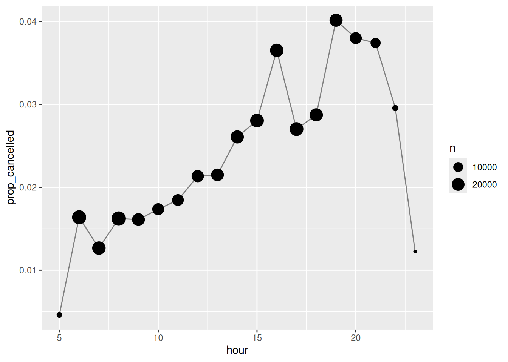
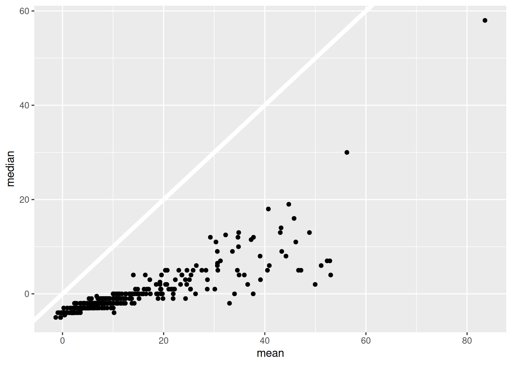

library(tidyverse)
library(nycflights13)13 Números
Introducción
Hacer números
Cambiar cadenas a enteros de doble precisión
x <- c("1.2", "5.6", "1e3")
parse_double(x) # produce:[1] 1.2 5.6 1000.0Cambiar cadenas que tengan caracteres no numéricos a números (especialemnte útil para porcentajes y datos monetarios)
x <- c("$1,234", "USD 3,513", "59%")
parse_number(x) # produce:[1] 1234 3513 59Recuentos
Explorar rápidamente contando la cantidad de destinos específicos de los vuelos
count_dest <- flights |> count(dest) # produce:
count_dest[1:5,] # produce:# A tibble: 5 × 2
dest n
<chr> <int>
1 ABQ 254
2 ACK 265
3 ALB 439
4 ANC 8
5 ATL 17215Ordenar en orden descendente o ver los vuelos más comunes
count_dest <- flights |> count(dest, sort = TRUE)
count_dest[1:5,] # produce:# A tibble: 5 × 2
dest n
<chr> <int>
1 ORD 17283
2 ATL 17215
3 LAX 16174
4 BOS 15508
5 MCO 14082Calcular la cantidad de vuelos por destino específico y calcular la media de retraso de llegada según cada destino
count_dest <- flights |>
group_by(dest) |>
summarize(
n = n(),
delay = mean(arr_delay, na.rm = TRUE)
)
count_dest[1:5,]# A tibble: 5 × 3
dest n delay
<chr> <int> <dbl>
1 ABQ 254 4.38
2 ACK 265 4.85
3 ALB 439 14.4
4 ANC 8 -2.5
5 ATL 17215 11.3 Contar los valores faltantes de la variable hora de salida en cada destino (con sum() y is.na())
my_flights <- flights |>
group_by(dest) |>
summarize(n_cancelled = sum(is.na(dep_time)))
my_flights[1:5,] # produce:# A tibble: 5 × 2
dest n_cancelled
<chr> <int>
1 ABQ 0
2 ACK 0
3 ALB 20
4 ANC 0
5 ATL 317Transformaciones numéricas
R usa reglas de reciclaje para manejar las operaciones con vectores (variables)
x <- c(1, 2, 10, 20)
x / 5 # produce:[1] 0.2 0.4 2.0 4.0Por la reglas de reciclaje, lo anterior es una abriviación de:
x / c(5, 5, 5, 5) # produce:[1] 0.2 0.4 2.0 4.0Normalmente (aunque no siempre) muestra una advertencia si el vector más largo no es un múltiplo del más corto:
x * c(1, 2) # produce: [1] 1 4 10 40x * c(1, 2, 3) # produce:Warning in x * c(1, 2, 3): longer object length is not a multiple of shorter
object length[1] 1 4 30 20Mínimo y Máximo
Crear una tabla con variables x e y
df <- tribble(
~x, ~y,
1, 3,
5, 2,
7, NA,
)Crear nuevas variable con los valores mínimos y máximos
df |>
mutate(
min = pmin(x, y, na.rm = TRUE),
max = pmax(x, y, na.rm = TRUE)
) # produce:# A tibble: 3 × 4
x y min max
<dbl> <dbl> <dbl> <dbl>
1 1 3 1 3
2 5 2 2 5
3 7 NA 7 7Aritmética modular
# Ejemplo de división entera
1:10 %/% 3 # produce: [1] 0 0 1 1 1 2 2 2 3 3# Cálculo del resto de una división (la operación módulo)
1:10 %% 3 # produce: [1] 1 2 0 1 2 0 1 2 0 1Usar la división entera y el módulo para desempaquetar la hora de salida
my_flights <- flights |>
mutate(
hour = sched_dep_time %/% 100,
minute = sched_dep_time %% 100,
.keep = "used"
)
my_flights[1:5,1:3] # produce:# A tibble: 5 × 3
sched_dep_time hour minute
<int> <dbl> <dbl>
1 515 5 15
2 529 5 29
3 540 5 40
4 545 5 45
5 600 6 0Combinar eso con mean(is.na(x)) para ver cómo varía la proporción de vuelos cancelados a lo largo del día
flights |>
group_by(hour = sched_dep_time %/% 100) |>
summarize(prop_cancelled = mean(is.na(dep_time)), n = n()) |>
filter(hour > 1) |>
ggplot(aes(x = hour, y = prop_cancelled)) +
geom_line(color = "grey50") +
geom_point(aes(size = n))
Redondeo
round(123.456) # produce:[1] 123round(123.456, 2) # produce[1] 123.46round(123.456, 1) # produce[1] 123.5round(123.456, -1) # produce[1] 120round(123.456, -2) # produce[1] 100R usa el método de redondeo bancario (la mitad hacia arriba y la mitad hacia abajo)
round(c(1.5, 2.5)) # produce:[1] 2 2x <- 123.456
# floor siempre redondea hacia abajo
floor(x) # produce:[1] 123# ceiling siempre redondea hacia arriba
ceiling(x) # produce:[1] 124Transformaciones generales
Desplazamientos
x <- c(2, 5, 11, 11, 19, 35)
lag(x) # produce:[1] NA 2 5 11 11 19lead(x) # produce:[1] 5 11 11 19 35 NAConocer la diferencia entre el valor actual y el anterior
x - lag(x) # produce:[1] NA 3 6 0 8 16Horarios en que alguien visitó un sitio web
events <- tibble(
time = c(0, 1, 2, 3, 5, 10, 12, 15, 17, 19, 20, 27, 28, 30)
)Calcular el tiempo entre cada evento y determinar si hay una diferencia lo suficientemente grande como para calificar
events <- events |>
mutate(
diff = time - lag(time, default = first(time)),
has_gap = diff >= 5
)
events[1:5,1:3] # produce:# A tibble: 5 × 3
time diff has_gap
<dbl> <dbl> <lgl>
1 0 0 FALSE
2 1 1 FALSE
3 2 1 FALSE
4 3 1 FALSE
5 5 2 FALSE Resúmenes numéricos
Centro
Agrupar por año, mes y día y resumir por media, mediana y cantidad de retraso de salida
my_flights <- flights |>
group_by(year, month, day) |>
summarize(
mean = mean(dep_delay, na.rm = TRUE),
median = median(dep_delay, na.rm = TRUE),
n = n(),
.groups = "drop"
)
my_flights[1:5,1:6] # produce:# A tibble: 5 × 6
year month day mean median n
<int> <int> <int> <dbl> <dbl> <int>
1 2013 1 1 11.5 -1 842
2 2013 1 2 13.9 0 943
3 2013 1 3 11.0 0 914
4 2013 1 4 8.95 -1 915
5 2013 1 5 5.73 -1 720Diagrama de dispersión que relaciona la media con la mediana
my_flights %>%
ggplot(aes(x = mean, y = median)) +
geom_abline(slope = 1, intercept = 0, color = "white", linewidth = 2) +
geom_point()
Mínimos, Máximos y Cuantiles
Agrupar los vuelos por año, mes y día y resumir por valor máximo de retraso de salida y cuantil 95 (El valor mayor que el 95% de los valores, el cuantil 25 es el valor mayor que el 25% de los valores y el cuantil 50 es la mediana)
my_flights <- flights |>
group_by(year, month, day) |>
summarize(
max = max(dep_delay, na.rm = TRUE),
q95 = quantile(dep_delay, 0.95, na.rm = TRUE),
.groups = "drop"
)
my_flights[1:5,] # produce:# A tibble: 5 × 5
year month day max q95
<int> <int> <int> <dbl> <dbl>
1 2013 1 1 853 70.1
2 2013 1 2 379 85
3 2013 1 3 291 68
4 2013 1 4 288 60
5 2013 1 5 327 41